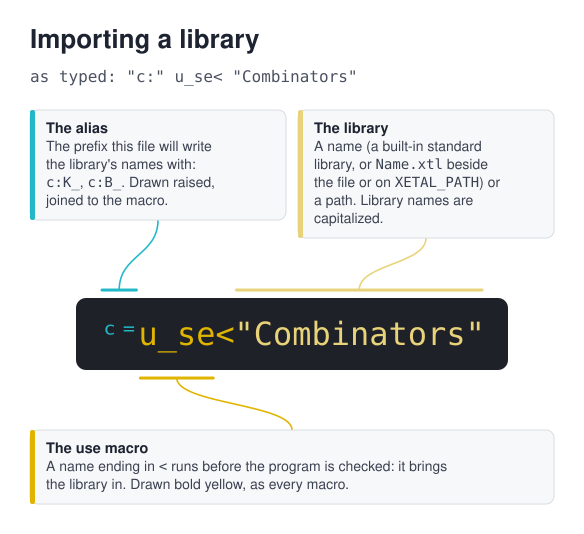
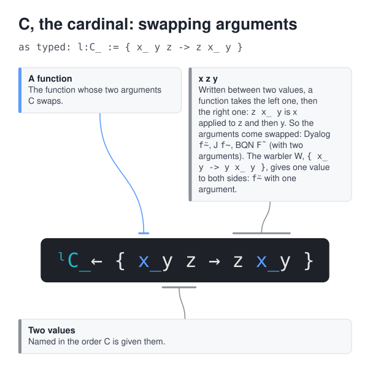
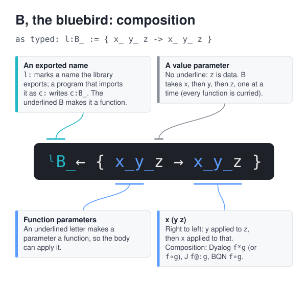
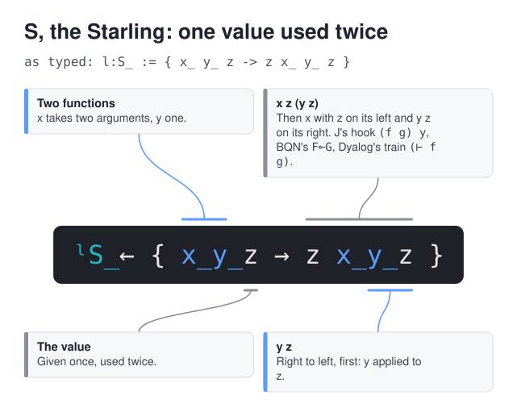
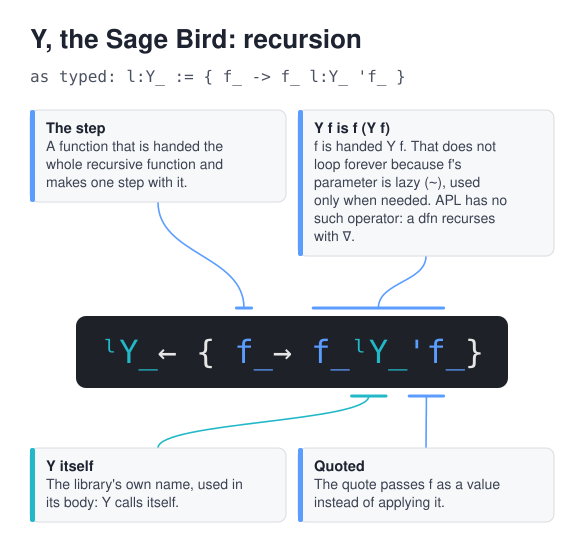

The aviary: combinators in X_eTaL
Raymond Smullyan's birds as a library, run as you read
Table of Contents
A combinator is a function that only rearranges, repeats or drops its
arguments. Raymond Smullyan's To Mock a Mockingbird names them as
birds, and the standard library Combinators (lib/Combinators.xtl)
holds every one of his birds that type-checks, under its letter:
docs/birds.md lists them all, with their definitions and types.
Every block below is run by xetal through ob-xetal and its result
recorded under it.
Importing the library
A program imports a library under an alias of its choosing; the library's names are then written with that prefix:

"c:" u_se< "Combinators" 1 c:K_ 2
1
K, the kestrel, keeps its first argument and drops the second.
Seeing the order of arguments
To watch a bird move its arguments around, give it functions whose
results spell their arguments: u:a_b 1 2 is 12, u:a_bc 1 2 3 is
- A quoted function before a bird is its first argument (the
nearest first), then comes a value on the left, then one on the
right; (e)_ v applies a function that is computed.
u:a_b := { a b -> (10 * a) + b }
u:a_bc := { a b c -> (100 * a) + (10 * b) + c }
u:i_nc := { _r + 1 }
u:d_ouble := { _r * 2 }
1 'u:a_b c:C_ 2
21
C, the cardinal, swaps them: C x y z is x z y, so C a_b 1 2 is a_b
2 1. Written between two values, a function takes the left one, then
the right one:

Composing
B, the bluebird, composes: B x y z is x (y z). Here x is inc (the
nearest operand) and y is double:

'u:d_ouble 'u:i_nc c:B_ 5
11
The blackbird B1 composes with a function of two arguments: B1 x y z
w is x (y z w), inc applied to a_b 1 2:
1 'u:a_b 'u:i_nc c:B_1 2
13
Using a value twice
W, the warbler, gives its function one value on both sides; S, the
starling, applies x to z and to y applied to z: S x y z is x z (y
z), here a_b 3 (double 3):

'u:a_b c:W_ 3 'u:d_ouble 'u:a_b c:S_ 3
33 36
Holding values
T, the thrush, applies its second argument to its first, and V, the vireo, holds two values until a function arrives:
3 c:T_ 'u:d_ouble (3 c:V_ 4)_ '+ (3 c:V_ 4)_ 'u:a_b
6 7 34
Recursion
Y, the sage bird, makes recursion from a function that is handed
itself: Y f is f (Y f). It does not unfold forever because the
function's self parameter is lazy (~), used only when needed:

u:f_act := { ~s_elf n -> n <= 1 ? 1; n * s_elf n - 1 }
'u:f_act c:Y_ 10
3628800
A superscript on a function repeats it, function power, which is how
Life steps its boards: u:l_ife^4.
u:d_ouble^10 1
1024
The birds with no type
The mockingbird M applies its argument to itself, M x is x x, and
no finite type describes that; nor the lark, the double mockingbird,
Turing's bird or the textbook Y built from them. They run when the
checker is skipped, here outside the session with --untyped: M given
the identity gives it back, and the textbook Y computes a factorial
too.
u:M_ := { x_ -> x_ 'x_ }
u:I_ := { x -> x }
('u:I_ u:M_)_ 42
u:Y_ := { f_ -> { x_ -> f_ x_ 'x_ } '{ x_ -> f_ x_ 'x_ } }
u:F_ := { ~s_elf n -> n <= 1 ? 1; n * s_elf n - 1 }
(u:Y_ 'u:F_)_ 5
42 120